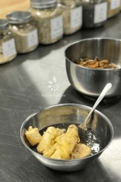
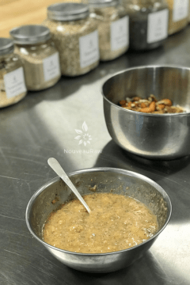
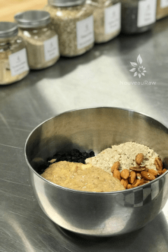
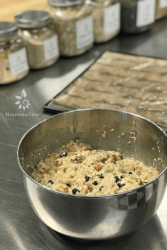
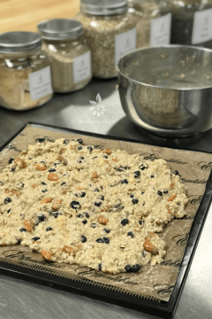
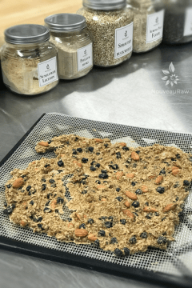

Blueberry Banana Muesli
 ~ raw, vegan, gluten-free ~
~ raw, vegan, gluten-free ~
When you eat a homemade cereal paired with nut milk and fresh fruit… you have the perfect Whole Food Plant-Based Lifestyle breakfast.
Here’s the thing, food is essential for life, therefore make it good food! Good in flavor and good for our bodies. And there really is no reason why we can’t have it all… spoonful by spoonful.
This recipe a simple, but, has a sturdy blend of hardy oats, chewy blueberries, snappy sprouted nuts, superfood chia seeds, and a hint of banana.
Within the ingredient list, you will notice that I mention using either fresh or dried blueberries. Use whatever you can get your paws on. I have made it both ways, and truthfully, I prefer it with dried blueberries. Most likely due to the condensed sweetness they offer.
Using fresh blueberries is good too, but they tend to take longer to dehydrate than the rest of the cereal ingredients. Now, if you didn’t care about shelf life, leaving some moisture in the blueberries does add an incredible “pop” in each bite of cereal. But if you do use fresh, remember that it won’t last more than a few days.
This muesli is wonderful with nut milk poured over it. You can enjoy this muesli right away or if you want to take it to a whole new level, let it soak in the milk for 30 minutes to overnight. I love the overnight version. It creates a beautiful, porridge-like texture with little bits of nutty crunch. It is also amazing stirred into raw yogurt. I suggest trying all versions and finding what suits you best. Keep me posted; I would love to know!
Yields 4 cups cereal
Dry Ingredients:
- 2 1/2 cups gluten-free rolled oats, soaked
- 1/2 cup raw almonds, soaked & chopped
- 1/2 cup raw pecans, soaked & chopped
- 2 cups fresh blueberries or dried
Wet Ingredients:
- 2 large bananas, ripe (approx. 1 1/2 cup)
- 1/2 cup raw almond butter
- 1/4 cup raw honey or raw coconut nectar
- 1 Tbsp chia seeds, rehydrated in 1/2 cup water
- 1/4 tsp Himalayan pink salt
Preparation:
- After the oats are done soaking, drain, and rinse them under cool water for 2 minutes.
- Use your fingers to agitate them while rinsing.
- Hand squeeze the excess water from them and place them in a large bowl.
- Drain and rinse the nuts, adding to the bowl with the oats.
- In the food processor, fitted with the “S” blade, combine bananas, almond butter, sweetener, chia seeds (along with soak water), and salt. Process until nice and smooth.
- Taste test and see if it is sweet enough. It all depends on the sugar level content of your bananas.
- If you want a sweeter taste just add more sweetener or wait to add a drizzle of sweetener to each bowl served.
- Combine wet and dry ingredients, mixing until well incorporated.
- Spread the batter on the non-stick sheets that come with the dehydrator.
- If you don’t own non-stick sheets, you can use parchment paper but not wax paper. Food tends to stick to wax paper.
- Dehydrate at 145 degrees (F) for 1 hour, then reduce to 115 degrees (F) for 16 hours or until dry.
- Partway through the dry time, flip the batter over onto the mesh sheet and peel back the non-stick sheet. This will allow air to circulate better and speed up the dry time.
- Dry times will vary due to climate, humidity, and how full the machine is.
- Once cooled, place in the food processor and pulse to break it down to a small crumble.
- Store in an airtight glass container. Place in the fridge to extend the shelf life.
The Institute of Culinary Ingredients™
- Why do I specify Ceylon cinnamon? Click (here) to learn why.
- Are oats gluten-free? Yes, read more about that (here).
- Are oats raw? Yes, they can be found. Click (here) to learn more.
- Do I need to soak and dehydrate oats? Not required but recommended. Click (here) to see why.
Culinary Explanations:
- Why do I start the dehydrator at 145 degrees (F)? Click (here) to learn the reason behind this.
- When working with fresh ingredients, it is important to taste test as you build a recipe. Learn why (here).
- Don’t own a dehydrator? Learn how to use your oven (here). I do however truly believe that it is a worthwhile investment. Click (here) to learn what I use.
-

-
Mash the banana with other ingredients indicated above with a fork.
-

-
Go ahead and leave some banana lumps for texture.
-

-
Add to the bowl of other ingredients.
-

-
Combine everything really well.
-

-
Spread on the dehydrator sheets and dry.
-

-
Once dry, place in food processor and pulse to a crumble.
© AmieSue.com